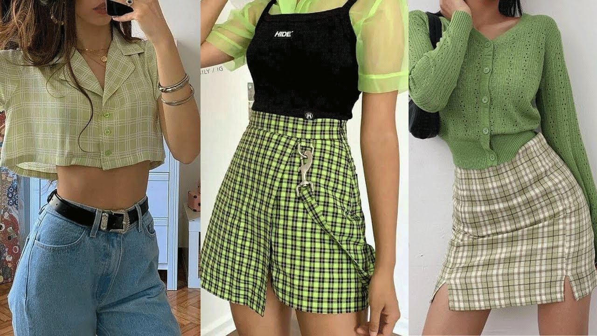

Esta moda se caracterizó por una estética muy particular, hasta tal punto que consiguió ser la forma de expresión de una disconformidad contra las normas establecidas. Por ello, este estilo destaca por mezclar prendas informales con una apariencia desenfadada.
Ver modelosLo primero que tienes que saber sobre los góticos es que tienen una estética propia, que se centra en el color negro. Todo lo que llevan será de color negro o de colores como el rojo o morado muy oscuros
Ver RecetaEl término 'vintage' se usa para describir la ropa que tiene entre 20 y 100 años de antigüedad, aunque algunos limitan el tiempo a entre 25 y 75 años
Ver modelos